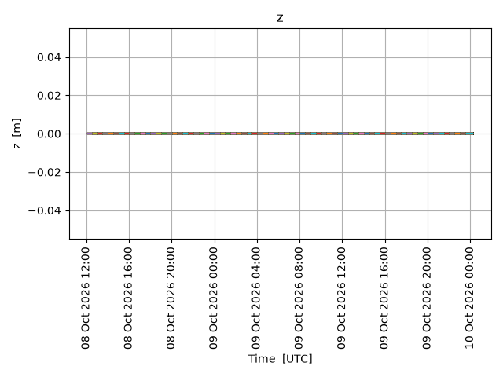
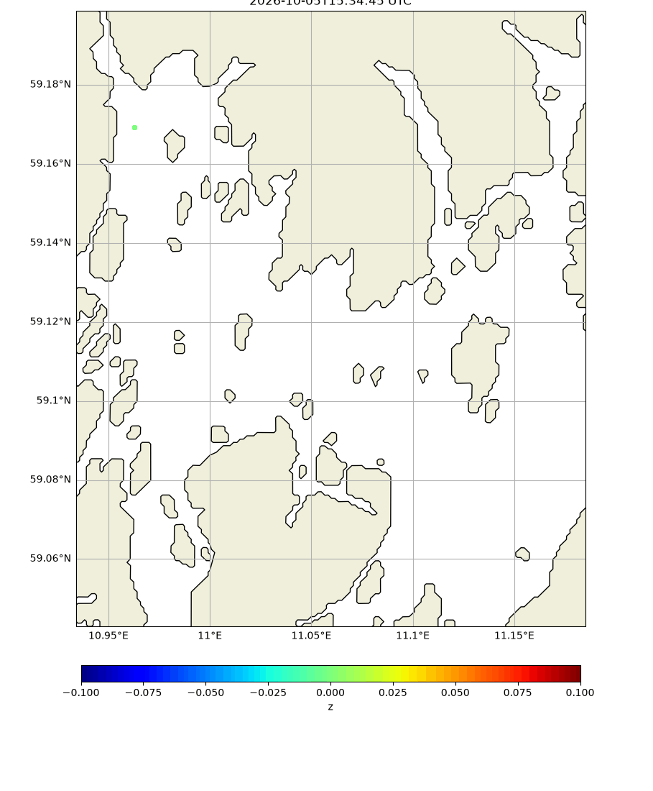

Note
Go to the end to download the full example code.
Sediment drift from Glomma river outlet
from datetime import timedelta, datetime
from opendrift.models.sedimentdrift import SedimentDrift
o = SedimentDrift(loglevel=20) # 0 for debug output
if False: # Using constant south-westwards current and wind
o.set_config('environment:fallback:x_sea_water_velocity', -.05)
o.set_config('environment:fallback:y_sea_water_velocity', -.1)
o.set_config('environment:fallback:y_wind', -6)
o.set_config('environment:fallback:x_wind', -2)
o.set_config('environment:fallback:sea_floor_depth_below_sea_level', 100) # 100m depth
else: # Using live data from Thredds
o.add_readers_from_list([
'https://thredds.met.no/thredds/dodsC/fou-hi/norkystv3_800m_m00_be'])
15:34:45 INFO opendrift:569: OpenDriftSimulation initialised (version 1.14.11 / v1.14.12-32-g22db1c0)
Adding some diffusion
o.set_config('drift:current_uncertainty', .2)
o.set_config('drift:wind_uncertainty', 2)
o.set_config('vertical_mixing:diffusivitymodel', 'windspeed_Large1994')
#o.set_config('vertical_mixing:diffusivitymodel', 'environment')
Source of sediments at Glomma river outlet
lat=59.169194
lon=10.962920
o.seed_elements(lon=lon, lat=lat, number=10000,
time=[datetime.now(), datetime.now()+timedelta(hours=48)],
terminal_velocity=-.001) # 1 mm/s settling speed
o.run(time_step=600, time_step_output=1800, duration=timedelta(hours=36))
15:34:45 INFO opendrift.models.basemodel.environment:203: Adding a global landmask from GSHHG
15:34:51 INFO opendrift.models.basemodel.environment:227: Fallback values will be used for the following variables which have no readers:
15:34:51 INFO opendrift.models.basemodel.environment:230: x_sea_water_velocity: 0.000000
15:34:51 INFO opendrift.models.basemodel.environment:230: y_sea_water_velocity: 0.000000
15:34:51 INFO opendrift.models.basemodel.environment:230: sea_surface_height: 0.000000
15:34:51 INFO opendrift.models.basemodel.environment:230: upward_sea_water_velocity: 0.000000
15:34:51 INFO opendrift.models.basemodel.environment:230: x_wind: 0.000000
15:34:51 INFO opendrift.models.basemodel.environment:230: y_wind: 0.000000
15:34:51 INFO opendrift.models.basemodel.environment:230: sea_surface_wave_stokes_drift_x_velocity: 0.000000
15:34:51 INFO opendrift.models.basemodel.environment:230: sea_surface_wave_stokes_drift_y_velocity: 0.000000
15:34:51 INFO opendrift.models.basemodel.environment:230: sea_surface_wave_period_at_variance_spectral_density_maximum: 0.000000
15:34:51 INFO opendrift.models.basemodel.environment:230: sea_surface_wave_mean_period_from_variance_spectral_density_second_frequency_moment: 0.000000
15:34:51 INFO opendrift.models.basemodel.environment:230: ocean_vertical_diffusivity: 0.020000
15:34:51 INFO opendrift.models.basemodel.environment:230: ocean_mixed_layer_thickness: 50.000000
15:34:51 INFO opendrift.models.basemodel.environment:230: sea_floor_depth_below_sea_level: 10000.000000
15:34:51 INFO opendrift:1921: Storing previous values of element property lon because of condition (('general:coastline_action', 'in', ['stranding', 'previous']), 'or', ('general:seafloor_action', 'in', ['previous']))
15:34:51 INFO opendrift:1921: Storing previous values of element property lat because of condition (('general:coastline_action', 'in', ['stranding', 'previous']), 'or', ('general:seafloor_action', 'in', ['previous']))
15:34:51 INFO opendrift:958: Using existing reader for land_binary_mask to move elements to ocean
15:34:51 INFO opendrift:989: All points are in ocean
15:34:51 INFO opendrift:2237: 2026-10-05 15:34:45.417906 - step 1 of 216 - 35 active elements (0 deactivated)
15:34:51 INFO opendrift.readers:67: Opening file with xr.open_dataset
15:34:56 INFO opendrift.readers.reader_netCDF_CF_generic:340: Detected dimensions: {'x': 'X', 'y': 'Y', 'z': 'depth', 'time': 'time'}
15:34:56 INFO opendrift.readers.basereader:175: Variable x_sea_water_velocity will be rotated from eastward_sea_water_velocity
15:34:56 INFO opendrift.readers.basereader:175: Variable y_sea_water_velocity will be rotated from northward_sea_water_velocity
15:34:56 INFO opendrift.readers.basereader:175: Variable x_wind will be rotated from eastward_wind
15:34:56 INFO opendrift.readers.basereader:175: Variable y_wind will be rotated from northward_wind
15:35:04 INFO opendrift:2237: 2026-10-05 15:44:45.417906 - step 2 of 216 - 70 active elements (0 deactivated)
15:35:04 INFO opendrift:2237: 2026-10-05 15:54:45.417906 - step 3 of 216 - 105 active elements (0 deactivated)
15:35:04 INFO opendrift:2237: 2026-10-05 16:04:45.417906 - step 4 of 216 - 139 active elements (0 deactivated)
15:35:12 INFO opendrift:2237: 2026-10-05 16:14:45.417906 - step 5 of 216 - 174 active elements (0 deactivated)
15:35:12 INFO opendrift:2237: 2026-10-05 16:24:45.417906 - step 6 of 216 - 209 active elements (0 deactivated)
15:35:12 INFO opendrift:2237: 2026-10-05 16:34:45.417906 - step 7 of 216 - 244 active elements (0 deactivated)
15:35:12 INFO opendrift:2237: 2026-10-05 16:44:45.417906 - step 8 of 216 - 278 active elements (0 deactivated)
15:35:12 INFO opendrift:2237: 2026-10-05 16:54:45.417906 - step 9 of 216 - 313 active elements (0 deactivated)
15:35:12 INFO opendrift:2237: 2026-10-05 17:04:45.417906 - step 10 of 216 - 348 active elements (0 deactivated)
15:35:14 INFO opendrift:2237: 2026-10-05 17:14:45.417906 - step 11 of 216 - 382 active elements (0 deactivated)
15:35:14 INFO opendrift:2237: 2026-10-05 17:24:45.417906 - step 12 of 216 - 417 active elements (0 deactivated)
15:35:14 INFO opendrift:2237: 2026-10-05 17:34:45.417906 - step 13 of 216 - 452 active elements (0 deactivated)
15:35:14 INFO opendrift:2237: 2026-10-05 17:44:45.417906 - step 14 of 216 - 487 active elements (0 deactivated)
15:35:14 INFO opendrift:2237: 2026-10-05 17:54:45.417906 - step 15 of 216 - 521 active elements (0 deactivated)
15:35:14 INFO opendrift:2237: 2026-10-05 18:04:45.417906 - step 16 of 216 - 556 active elements (0 deactivated)
15:35:25 INFO opendrift:2237: 2026-10-05 18:14:45.417906 - step 17 of 216 - 591 active elements (0 deactivated)
15:35:25 INFO opendrift:2237: 2026-10-05 18:24:45.417906 - step 18 of 216 - 625 active elements (0 deactivated)
15:35:25 INFO opendrift:2237: 2026-10-05 18:34:45.417906 - step 19 of 216 - 660 active elements (0 deactivated)
15:35:25 INFO opendrift:2237: 2026-10-05 18:44:45.417906 - step 20 of 216 - 695 active elements (0 deactivated)
15:35:25 INFO opendrift:2237: 2026-10-05 18:54:45.417906 - step 21 of 216 - 730 active elements (0 deactivated)
15:35:25 INFO opendrift:2237: 2026-10-05 19:04:45.417906 - step 22 of 216 - 764 active elements (0 deactivated)
15:35:28 INFO opendrift:2237: 2026-10-05 19:14:45.417906 - step 23 of 216 - 799 active elements (0 deactivated)
15:35:28 INFO opendrift:2237: 2026-10-05 19:24:45.417906 - step 24 of 216 - 834 active elements (0 deactivated)
15:35:28 INFO opendrift:2237: 2026-10-05 19:34:45.417906 - step 25 of 216 - 868 active elements (0 deactivated)
15:35:28 INFO opendrift:2237: 2026-10-05 19:44:45.417906 - step 26 of 216 - 903 active elements (0 deactivated)
15:35:28 INFO opendrift:2237: 2026-10-05 19:54:45.417906 - step 27 of 216 - 938 active elements (0 deactivated)
15:35:28 INFO opendrift:2237: 2026-10-05 20:04:45.417906 - step 28 of 216 - 973 active elements (0 deactivated)
15:35:31 INFO opendrift:2237: 2026-10-05 20:14:45.417906 - step 29 of 216 - 1007 active elements (0 deactivated)
15:35:31 INFO opendrift:2237: 2026-10-05 20:24:45.417906 - step 30 of 216 - 1042 active elements (0 deactivated)
15:35:31 INFO opendrift:2237: 2026-10-05 20:34:45.417906 - step 31 of 216 - 1077 active elements (0 deactivated)
15:35:31 INFO opendrift:2237: 2026-10-05 20:44:45.417906 - step 32 of 216 - 1112 active elements (0 deactivated)
15:35:31 INFO opendrift:2237: 2026-10-05 20:54:45.417906 - step 33 of 216 - 1146 active elements (0 deactivated)
15:35:31 INFO opendrift:2237: 2026-10-05 21:04:45.417906 - step 34 of 216 - 1181 active elements (0 deactivated)
15:35:41 INFO opendrift:2237: 2026-10-05 21:14:45.417906 - step 35 of 216 - 1216 active elements (0 deactivated)
15:35:41 INFO opendrift:2237: 2026-10-05 21:24:45.417906 - step 36 of 216 - 1250 active elements (0 deactivated)
15:35:41 INFO opendrift:2237: 2026-10-05 21:34:45.417906 - step 37 of 216 - 1285 active elements (0 deactivated)
15:35:41 INFO opendrift:2237: 2026-10-05 21:44:45.417906 - step 38 of 216 - 1320 active elements (0 deactivated)
15:35:41 INFO opendrift:2237: 2026-10-05 21:54:45.417906 - step 39 of 216 - 1355 active elements (0 deactivated)
15:35:41 INFO opendrift:2237: 2026-10-05 22:04:45.417906 - step 40 of 216 - 1389 active elements (0 deactivated)
15:35:47 INFO opendrift:2237: 2026-10-05 22:14:45.417906 - step 41 of 216 - 1424 active elements (0 deactivated)
15:35:47 INFO opendrift:2237: 2026-10-05 22:24:45.417906 - step 42 of 216 - 1459 active elements (0 deactivated)
15:35:47 INFO opendrift:2237: 2026-10-05 22:34:45.417906 - step 43 of 216 - 1493 active elements (0 deactivated)
15:35:47 INFO opendrift:2237: 2026-10-05 22:44:45.417906 - step 44 of 216 - 1528 active elements (0 deactivated)
15:35:47 INFO opendrift:2237: 2026-10-05 22:54:45.417906 - step 45 of 216 - 1563 active elements (0 deactivated)
15:35:47 INFO opendrift:2237: 2026-10-05 23:04:45.417906 - step 46 of 216 - 1598 active elements (0 deactivated)
15:35:49 INFO opendrift:2237: 2026-10-05 23:14:45.417906 - step 47 of 216 - 1632 active elements (0 deactivated)
15:35:49 INFO opendrift:2237: 2026-10-05 23:24:45.417906 - step 48 of 216 - 1667 active elements (0 deactivated)
15:35:49 INFO opendrift:2237: 2026-10-05 23:34:45.417906 - step 49 of 216 - 1702 active elements (0 deactivated)
15:35:49 INFO opendrift:2237: 2026-10-05 23:44:45.417906 - step 50 of 216 - 1736 active elements (0 deactivated)
15:35:49 INFO opendrift:2237: 2026-10-05 23:54:45.417906 - step 51 of 216 - 1771 active elements (0 deactivated)
15:35:49 INFO opendrift:2237: 2026-10-06 00:04:45.417906 - step 52 of 216 - 1806 active elements (0 deactivated)
15:35:51 INFO opendrift:2237: 2026-10-06 00:14:45.417906 - step 53 of 216 - 1841 active elements (0 deactivated)
15:35:51 INFO opendrift:2237: 2026-10-06 00:24:45.417906 - step 54 of 216 - 1875 active elements (0 deactivated)
15:35:51 INFO opendrift:2237: 2026-10-06 00:34:45.417906 - step 55 of 216 - 1910 active elements (0 deactivated)
15:35:51 INFO opendrift:2237: 2026-10-06 00:44:45.417906 - step 56 of 216 - 1945 active elements (0 deactivated)
15:35:52 INFO opendrift:2237: 2026-10-06 00:54:45.417906 - step 57 of 216 - 1979 active elements (0 deactivated)
15:35:52 INFO opendrift:2237: 2026-10-06 01:04:45.417906 - step 58 of 216 - 2014 active elements (0 deactivated)
15:35:54 INFO opendrift:2237: 2026-10-06 01:14:45.417906 - step 59 of 216 - 2049 active elements (0 deactivated)
15:35:54 INFO opendrift:2237: 2026-10-06 01:24:45.417906 - step 60 of 216 - 2084 active elements (0 deactivated)
15:35:54 INFO opendrift:2237: 2026-10-06 01:34:45.417906 - step 61 of 216 - 2118 active elements (0 deactivated)
15:35:54 INFO opendrift:2237: 2026-10-06 01:44:45.417906 - step 62 of 216 - 2153 active elements (0 deactivated)
15:35:54 INFO opendrift:2237: 2026-10-06 01:54:45.417906 - step 63 of 216 - 2188 active elements (0 deactivated)
15:35:54 INFO opendrift:2237: 2026-10-06 02:04:45.417906 - step 64 of 216 - 2223 active elements (0 deactivated)
15:35:56 INFO opendrift:2237: 2026-10-06 02:14:45.417906 - step 65 of 216 - 2257 active elements (0 deactivated)
15:35:56 INFO opendrift:2237: 2026-10-06 02:24:45.417906 - step 66 of 216 - 2292 active elements (0 deactivated)
15:35:56 INFO opendrift:2237: 2026-10-06 02:34:45.417906 - step 67 of 216 - 2327 active elements (0 deactivated)
15:35:56 INFO opendrift:2237: 2026-10-06 02:44:45.417906 - step 68 of 216 - 2361 active elements (0 deactivated)
15:35:57 INFO opendrift:2237: 2026-10-06 02:54:45.417906 - step 69 of 216 - 2396 active elements (0 deactivated)
15:35:57 INFO opendrift:2237: 2026-10-06 03:04:45.417906 - step 70 of 216 - 2431 active elements (0 deactivated)
15:35:59 INFO opendrift:2237: 2026-10-06 03:14:45.417906 - step 71 of 216 - 2466 active elements (0 deactivated)
15:35:59 INFO opendrift:2237: 2026-10-06 03:24:45.417906 - step 72 of 216 - 2500 active elements (0 deactivated)
15:35:59 INFO opendrift:2237: 2026-10-06 03:34:45.417906 - step 73 of 216 - 2535 active elements (0 deactivated)
15:35:59 INFO opendrift:2237: 2026-10-06 03:44:45.417906 - step 74 of 216 - 2570 active elements (0 deactivated)
15:35:59 INFO opendrift:2237: 2026-10-06 03:54:45.417906 - step 75 of 216 - 2604 active elements (0 deactivated)
15:35:59 INFO opendrift:2237: 2026-10-06 04:04:45.417906 - step 76 of 216 - 2639 active elements (0 deactivated)
15:36:01 INFO opendrift:2237: 2026-10-06 04:14:45.417906 - step 77 of 216 - 2674 active elements (0 deactivated)
15:36:01 INFO opendrift:2237: 2026-10-06 04:24:45.417906 - step 78 of 216 - 2709 active elements (0 deactivated)
15:36:02 INFO opendrift:2237: 2026-10-06 04:34:45.417906 - step 79 of 216 - 2743 active elements (0 deactivated)
15:36:02 INFO opendrift:2237: 2026-10-06 04:44:45.417906 - step 80 of 216 - 2778 active elements (0 deactivated)
15:36:02 INFO opendrift:2237: 2026-10-06 04:54:45.417906 - step 81 of 216 - 2813 active elements (0 deactivated)
15:36:02 INFO opendrift:2237: 2026-10-06 05:04:45.417906 - step 82 of 216 - 2847 active elements (0 deactivated)
15:36:04 INFO opendrift:2237: 2026-10-06 05:14:45.417906 - step 83 of 216 - 2882 active elements (0 deactivated)
15:36:04 INFO opendrift:2237: 2026-10-06 05:24:45.417906 - step 84 of 216 - 2917 active elements (0 deactivated)
15:36:04 INFO opendrift:2237: 2026-10-06 05:34:45.417906 - step 85 of 216 - 2952 active elements (0 deactivated)
15:36:04 INFO opendrift:2237: 2026-10-06 05:44:45.417906 - step 86 of 216 - 2986 active elements (0 deactivated)
15:36:05 INFO opendrift:2237: 2026-10-06 05:54:45.417906 - step 87 of 216 - 3021 active elements (0 deactivated)
15:36:05 INFO opendrift:2237: 2026-10-06 06:04:45.417906 - step 88 of 216 - 3056 active elements (0 deactivated)
15:36:07 INFO opendrift:2237: 2026-10-06 06:14:45.417906 - step 89 of 216 - 3090 active elements (0 deactivated)
15:36:07 INFO opendrift:2237: 2026-10-06 06:24:45.417906 - step 90 of 216 - 3125 active elements (0 deactivated)
15:36:07 INFO opendrift:2237: 2026-10-06 06:34:45.417906 - step 91 of 216 - 3160 active elements (0 deactivated)
15:36:07 INFO opendrift:2237: 2026-10-06 06:44:45.417906 - step 92 of 216 - 3195 active elements (0 deactivated)
15:36:08 INFO opendrift:2237: 2026-10-06 06:54:45.417906 - step 93 of 216 - 3229 active elements (0 deactivated)
15:36:08 INFO opendrift:2237: 2026-10-06 07:04:45.417906 - step 94 of 216 - 3264 active elements (0 deactivated)
15:36:10 INFO opendrift:2237: 2026-10-06 07:14:45.417906 - step 95 of 216 - 3299 active elements (0 deactivated)
15:36:10 INFO opendrift:2237: 2026-10-06 07:24:45.417906 - step 96 of 216 - 3334 active elements (0 deactivated)
15:36:10 INFO opendrift:2237: 2026-10-06 07:34:45.417906 - step 97 of 216 - 3368 active elements (0 deactivated)
15:36:10 INFO opendrift:2237: 2026-10-06 07:44:45.417906 - step 98 of 216 - 3403 active elements (0 deactivated)
15:36:10 INFO opendrift:2237: 2026-10-06 07:54:45.417906 - step 99 of 216 - 3438 active elements (0 deactivated)
15:36:11 INFO opendrift:2237: 2026-10-06 08:04:45.417906 - step 100 of 216 - 3472 active elements (0 deactivated)
15:36:12 INFO opendrift:2237: 2026-10-06 08:14:45.417906 - step 101 of 216 - 3507 active elements (0 deactivated)
15:36:13 INFO opendrift:2237: 2026-10-06 08:24:45.417906 - step 102 of 216 - 3542 active elements (0 deactivated)
15:36:13 INFO opendrift:2237: 2026-10-06 08:34:45.417906 - step 103 of 216 - 3577 active elements (0 deactivated)
15:36:13 INFO opendrift:2237: 2026-10-06 08:44:45.417906 - step 104 of 216 - 3611 active elements (0 deactivated)
15:36:13 INFO opendrift:2237: 2026-10-06 08:54:45.417906 - step 105 of 216 - 3646 active elements (0 deactivated)
15:36:14 INFO opendrift:2237: 2026-10-06 09:04:45.417906 - step 106 of 216 - 3681 active elements (0 deactivated)
15:36:16 INFO opendrift:2237: 2026-10-06 09:14:45.417906 - step 107 of 216 - 3715 active elements (0 deactivated)
15:36:16 INFO opendrift:2237: 2026-10-06 09:24:45.417906 - step 108 of 216 - 3750 active elements (0 deactivated)
15:36:16 INFO opendrift:2237: 2026-10-06 09:34:45.417906 - step 109 of 216 - 3785 active elements (0 deactivated)
15:36:16 INFO opendrift:2237: 2026-10-06 09:44:45.417906 - step 110 of 216 - 3820 active elements (0 deactivated)
15:36:17 INFO opendrift:2237: 2026-10-06 09:54:45.417906 - step 111 of 216 - 3854 active elements (0 deactivated)
15:36:17 INFO opendrift:2237: 2026-10-06 10:04:45.417906 - step 112 of 216 - 3889 active elements (0 deactivated)
15:36:19 INFO opendrift:2237: 2026-10-06 10:14:45.417906 - step 113 of 216 - 3924 active elements (0 deactivated)
15:36:19 INFO opendrift:2237: 2026-10-06 10:24:45.417906 - step 114 of 216 - 3958 active elements (0 deactivated)
15:36:19 INFO opendrift:2237: 2026-10-06 10:34:45.417906 - step 115 of 216 - 3993 active elements (0 deactivated)
15:36:20 INFO opendrift:2237: 2026-10-06 10:44:45.417906 - step 116 of 216 - 4028 active elements (0 deactivated)
15:36:20 INFO opendrift:2237: 2026-10-06 10:54:45.417906 - step 117 of 216 - 4063 active elements (0 deactivated)
15:36:20 INFO opendrift:2237: 2026-10-06 11:04:45.417906 - step 118 of 216 - 4097 active elements (0 deactivated)
15:36:23 INFO opendrift:2237: 2026-10-06 11:14:45.417906 - step 119 of 216 - 4132 active elements (0 deactivated)
15:36:23 INFO opendrift:2237: 2026-10-06 11:24:45.417906 - step 120 of 216 - 4167 active elements (0 deactivated)
15:36:23 INFO opendrift:2237: 2026-10-06 11:34:45.417906 - step 121 of 216 - 4201 active elements (0 deactivated)
15:36:23 INFO opendrift:2237: 2026-10-06 11:44:45.417906 - step 122 of 216 - 4236 active elements (0 deactivated)
15:36:24 INFO opendrift:2237: 2026-10-06 11:54:45.417906 - step 123 of 216 - 4271 active elements (0 deactivated)
15:36:24 INFO opendrift:2237: 2026-10-06 12:04:45.417906 - step 124 of 216 - 4306 active elements (0 deactivated)
15:36:26 INFO opendrift:2237: 2026-10-06 12:14:45.417906 - step 125 of 216 - 4340 active elements (0 deactivated)
15:36:26 INFO opendrift:2237: 2026-10-06 12:24:45.417906 - step 126 of 216 - 4375 active elements (0 deactivated)
15:36:26 INFO opendrift:2237: 2026-10-06 12:34:45.417906 - step 127 of 216 - 4410 active elements (0 deactivated)
15:36:26 INFO opendrift:2237: 2026-10-06 12:44:45.417906 - step 128 of 216 - 4445 active elements (0 deactivated)
15:36:27 INFO opendrift:2237: 2026-10-06 12:54:45.417906 - step 129 of 216 - 4479 active elements (0 deactivated)
15:36:27 INFO opendrift:2237: 2026-10-06 13:04:45.417906 - step 130 of 216 - 4514 active elements (0 deactivated)
15:36:29 INFO opendrift:2237: 2026-10-06 13:14:45.417906 - step 131 of 216 - 4549 active elements (0 deactivated)
15:36:29 INFO opendrift:2237: 2026-10-06 13:24:45.417906 - step 132 of 216 - 4583 active elements (0 deactivated)
15:36:30 INFO opendrift:2237: 2026-10-06 13:34:45.417906 - step 133 of 216 - 4618 active elements (0 deactivated)
15:36:30 INFO opendrift:2237: 2026-10-06 13:44:45.417906 - step 134 of 216 - 4653 active elements (0 deactivated)
15:36:30 INFO opendrift:2237: 2026-10-06 13:54:45.417906 - step 135 of 216 - 4688 active elements (0 deactivated)
15:36:31 INFO opendrift:2237: 2026-10-06 14:04:45.417906 - step 136 of 216 - 4722 active elements (0 deactivated)
15:36:33 INFO opendrift:2237: 2026-10-06 14:14:45.417906 - step 137 of 216 - 4757 active elements (0 deactivated)
15:36:33 INFO opendrift:2237: 2026-10-06 14:24:45.417906 - step 138 of 216 - 4792 active elements (0 deactivated)
15:36:33 INFO opendrift:2237: 2026-10-06 14:34:45.417906 - step 139 of 216 - 4826 active elements (0 deactivated)
15:36:34 INFO opendrift:2237: 2026-10-06 14:44:45.417906 - step 140 of 216 - 4861 active elements (0 deactivated)
15:36:34 INFO opendrift:2237: 2026-10-06 14:54:45.417906 - step 141 of 216 - 4896 active elements (0 deactivated)
15:36:35 INFO opendrift:2237: 2026-10-06 15:04:45.417906 - step 142 of 216 - 4931 active elements (0 deactivated)
15:36:37 INFO opendrift:2237: 2026-10-06 15:14:45.417906 - step 143 of 216 - 4965 active elements (0 deactivated)
15:36:37 INFO opendrift:2237: 2026-10-06 15:24:45.417906 - step 144 of 216 - 5000 active elements (0 deactivated)
15:36:37 INFO opendrift:2237: 2026-10-06 15:34:45.417906 - step 145 of 216 - 5035 active elements (0 deactivated)
15:36:38 INFO opendrift:2237: 2026-10-06 15:44:45.417906 - step 146 of 216 - 5069 active elements (0 deactivated)
15:36:38 INFO opendrift:2237: 2026-10-06 15:54:45.417906 - step 147 of 216 - 5104 active elements (0 deactivated)
15:36:39 INFO opendrift:2237: 2026-10-06 16:04:45.417906 - step 148 of 216 - 5139 active elements (0 deactivated)
15:36:41 INFO opendrift:2237: 2026-10-06 16:14:45.417906 - step 149 of 216 - 5174 active elements (0 deactivated)
15:36:41 INFO opendrift:2237: 2026-10-06 16:24:45.417906 - step 150 of 216 - 5208 active elements (0 deactivated)
15:36:41 INFO opendrift:2237: 2026-10-06 16:34:45.417906 - step 151 of 216 - 5243 active elements (0 deactivated)
15:36:41 INFO opendrift:2237: 2026-10-06 16:44:45.417906 - step 152 of 216 - 5278 active elements (0 deactivated)
15:36:42 INFO opendrift:2237: 2026-10-06 16:54:45.417906 - step 153 of 216 - 5312 active elements (0 deactivated)
15:36:42 INFO opendrift:2237: 2026-10-06 17:04:45.417906 - step 154 of 216 - 5347 active elements (0 deactivated)
15:36:46 INFO opendrift:2237: 2026-10-06 17:14:45.417906 - step 155 of 216 - 5382 active elements (0 deactivated)
15:36:47 INFO opendrift:2237: 2026-10-06 17:24:45.417906 - step 156 of 216 - 5417 active elements (0 deactivated)
15:36:47 INFO opendrift:2237: 2026-10-06 17:34:45.417906 - step 157 of 216 - 5451 active elements (0 deactivated)
15:36:47 INFO opendrift:2237: 2026-10-06 17:44:45.417906 - step 158 of 216 - 5486 active elements (0 deactivated)
15:36:48 INFO opendrift:2237: 2026-10-06 17:54:45.417906 - step 159 of 216 - 5521 active elements (0 deactivated)
15:36:48 INFO opendrift:2237: 2026-10-06 18:04:45.417906 - step 160 of 216 - 5556 active elements (0 deactivated)
15:36:50 INFO opendrift:2237: 2026-10-06 18:14:45.417906 - step 161 of 216 - 5590 active elements (0 deactivated)
15:36:51 INFO opendrift:2237: 2026-10-06 18:24:45.417906 - step 162 of 216 - 5625 active elements (0 deactivated)
15:36:51 INFO opendrift:2237: 2026-10-06 18:34:45.417906 - step 163 of 216 - 5660 active elements (0 deactivated)
15:36:51 INFO opendrift:2237: 2026-10-06 18:44:45.417906 - step 164 of 216 - 5694 active elements (0 deactivated)
15:36:52 INFO opendrift:2237: 2026-10-06 18:54:45.417906 - step 165 of 216 - 5729 active elements (0 deactivated)
15:36:52 INFO opendrift:2237: 2026-10-06 19:04:45.417906 - step 166 of 216 - 5764 active elements (0 deactivated)
15:36:54 INFO opendrift:2237: 2026-10-06 19:14:45.417906 - step 167 of 216 - 5799 active elements (0 deactivated)
15:36:55 INFO opendrift:2237: 2026-10-06 19:24:45.417906 - step 168 of 216 - 5833 active elements (0 deactivated)
15:36:55 INFO opendrift:2237: 2026-10-06 19:34:45.417906 - step 169 of 216 - 5868 active elements (0 deactivated)
15:36:55 INFO opendrift:2237: 2026-10-06 19:44:45.417906 - step 170 of 216 - 5903 active elements (0 deactivated)
15:36:56 INFO opendrift:2237: 2026-10-06 19:54:45.417906 - step 171 of 216 - 5937 active elements (0 deactivated)
15:36:56 INFO opendrift:2237: 2026-10-06 20:04:45.417906 - step 172 of 216 - 5972 active elements (0 deactivated)
15:36:58 INFO opendrift:2237: 2026-10-06 20:14:45.417906 - step 173 of 216 - 6007 active elements (0 deactivated)
15:36:59 INFO opendrift:2237: 2026-10-06 20:24:45.417906 - step 174 of 216 - 6042 active elements (0 deactivated)
15:36:59 INFO opendrift:2237: 2026-10-06 20:34:45.417906 - step 175 of 216 - 6076 active elements (0 deactivated)
15:36:59 INFO opendrift:2237: 2026-10-06 20:44:45.417906 - step 176 of 216 - 6111 active elements (0 deactivated)
15:37:00 INFO opendrift:2237: 2026-10-06 20:54:45.417906 - step 177 of 216 - 6146 active elements (0 deactivated)
15:37:00 INFO opendrift:2237: 2026-10-06 21:04:45.417906 - step 178 of 216 - 6180 active elements (0 deactivated)
15:37:04 INFO opendrift:2237: 2026-10-06 21:14:45.417906 - step 179 of 216 - 6215 active elements (0 deactivated)
15:37:04 INFO opendrift:2237: 2026-10-06 21:24:45.417906 - step 180 of 216 - 6250 active elements (0 deactivated)
15:37:04 INFO opendrift:2237: 2026-10-06 21:34:45.417906 - step 181 of 216 - 6285 active elements (0 deactivated)
15:37:05 INFO opendrift:2237: 2026-10-06 21:44:45.417906 - step 182 of 216 - 6319 active elements (0 deactivated)
15:37:05 INFO opendrift:2237: 2026-10-06 21:54:45.417906 - step 183 of 216 - 6354 active elements (0 deactivated)
15:37:05 INFO opendrift:2237: 2026-10-06 22:04:45.417906 - step 184 of 216 - 6389 active elements (0 deactivated)
15:37:08 INFO opendrift:2237: 2026-10-06 22:14:45.417906 - step 185 of 216 - 6423 active elements (0 deactivated)
15:37:08 INFO opendrift:2237: 2026-10-06 22:24:45.417906 - step 186 of 216 - 6458 active elements (0 deactivated)
15:37:08 INFO opendrift:2237: 2026-10-06 22:34:45.417906 - step 187 of 216 - 6493 active elements (0 deactivated)
15:37:09 INFO opendrift:2237: 2026-10-06 22:44:45.417906 - step 188 of 216 - 6528 active elements (0 deactivated)
15:37:09 INFO opendrift:2237: 2026-10-06 22:54:45.417906 - step 189 of 216 - 6562 active elements (0 deactivated)
15:37:09 INFO opendrift:2237: 2026-10-06 23:04:45.417906 - step 190 of 216 - 6597 active elements (0 deactivated)
15:37:11 INFO opendrift:2237: 2026-10-06 23:14:45.417906 - step 191 of 216 - 6632 active elements (0 deactivated)
15:37:12 INFO opendrift:2237: 2026-10-06 23:24:45.417906 - step 192 of 216 - 6667 active elements (0 deactivated)
15:37:12 INFO opendrift:2237: 2026-10-06 23:34:45.417906 - step 193 of 216 - 6701 active elements (0 deactivated)
15:37:12 INFO opendrift:2237: 2026-10-06 23:44:45.417906 - step 194 of 216 - 6736 active elements (0 deactivated)
15:37:13 INFO opendrift:2237: 2026-10-06 23:54:45.417906 - step 195 of 216 - 6771 active elements (0 deactivated)
15:37:13 INFO opendrift:2237: 2026-10-07 00:04:45.417906 - step 196 of 216 - 6805 active elements (0 deactivated)
15:37:16 INFO opendrift:2237: 2026-10-07 00:14:45.417906 - step 197 of 216 - 6840 active elements (0 deactivated)
15:37:16 INFO opendrift:2237: 2026-10-07 00:24:45.417906 - step 198 of 216 - 6875 active elements (0 deactivated)
15:37:17 INFO opendrift:2237: 2026-10-07 00:34:45.417906 - step 199 of 216 - 6910 active elements (0 deactivated)
15:37:17 INFO opendrift:2237: 2026-10-07 00:44:45.417906 - step 200 of 216 - 6944 active elements (0 deactivated)
15:37:18 INFO opendrift:2237: 2026-10-07 00:54:45.417906 - step 201 of 216 - 6979 active elements (0 deactivated)
15:37:18 INFO opendrift:2237: 2026-10-07 01:04:45.417906 - step 202 of 216 - 7014 active elements (0 deactivated)
15:37:20 INFO opendrift:2237: 2026-10-07 01:14:45.417906 - step 203 of 216 - 7048 active elements (0 deactivated)
15:37:21 INFO opendrift:2237: 2026-10-07 01:24:45.417906 - step 204 of 216 - 7083 active elements (0 deactivated)
15:37:21 INFO opendrift:2237: 2026-10-07 01:34:45.417906 - step 205 of 216 - 7118 active elements (0 deactivated)
15:37:21 INFO opendrift:2237: 2026-10-07 01:44:45.417906 - step 206 of 216 - 7153 active elements (0 deactivated)
15:37:22 INFO opendrift:2237: 2026-10-07 01:54:45.417906 - step 207 of 216 - 7187 active elements (0 deactivated)
15:37:22 INFO opendrift:2237: 2026-10-07 02:04:45.417906 - step 208 of 216 - 7222 active elements (0 deactivated)
15:37:24 INFO opendrift:2237: 2026-10-07 02:14:45.417906 - step 209 of 216 - 7257 active elements (0 deactivated)
15:37:25 INFO opendrift:2237: 2026-10-07 02:24:45.417906 - step 210 of 216 - 7291 active elements (0 deactivated)
15:37:25 INFO opendrift:2237: 2026-10-07 02:34:45.417906 - step 211 of 216 - 7326 active elements (0 deactivated)
15:37:25 INFO opendrift:2237: 2026-10-07 02:44:45.417906 - step 212 of 216 - 7361 active elements (0 deactivated)
15:37:26 INFO opendrift:2237: 2026-10-07 02:54:45.417906 - step 213 of 216 - 7396 active elements (0 deactivated)
15:37:26 INFO opendrift:2237: 2026-10-07 03:04:45.417906 - step 214 of 216 - 7430 active elements (0 deactivated)
15:37:29 INFO opendrift:2237: 2026-10-07 03:14:45.417906 - step 215 of 216 - 7465 active elements (0 deactivated)
15:37:30 INFO opendrift:2237: 2026-10-07 03:24:45.417906 - step 216 of 216 - 7500 active elements (0 deactivated)
15:37:30 INFO opendrift:2347: Removing 2500 unseeded elements
Plotting the depth vs time
o.plot_property('z')

Animate sediment particles colored by their depth
o.animation(color='z', fast=False, buffer=.01)
#o.animation(color='moving', fast=False, buffer=.01, colorbar=False, legend=['Sedimented', 'Moving'])
15:37:47 INFO opendrift:4823: Saving animation to /root/project/docs/source/gallery/animations/example_sediments_0.gif...
15:38:24 INFO opendrift:3241: Time to make animation: 0:00:49.798170

Total running time of the script: (3 minutes 47.117 seconds)